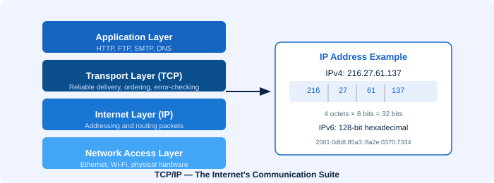

📡 Transmission Control Protocol / Internet Protocol (TCP/IP)
The fundamental communication suite that powers the Internet

What is TCP/IP?
TCP/IP is not a single protocol but a suite of protocols — a collection of rules governing how computers communicate. The name comes from its two most important protocols: the Transmission Control Protocol (TCP) and the Internet Protocol (IP).
Every device connected to the Internet uses TCP/IP. It was developed in the 1970s by the US Department of Defense and has become the universal standard for network communication.
The Two Core Protocols
📦 IP — Internet Protocol
IP is responsible for addressing and routing packets of data. It ensures that each data packet knows where it came from and where it's going. Every device on the Internet has a unique IP address, and IP uses these addresses to route packets across networks.
🔗 TCP — Transmission Control Protocol
TCP is responsible for reliable delivery. It breaks data into packets, sends them, tracks whether they arrived, and reassembles them in the correct order. If a packet is lost, TCP requests it to be resent. This ensures data integrity.
Other Protocols in the TCP/IP Suite
- HTTP/HTTPS — Web browsing
- SMTP — Sending email messages
- FTP — Allows files to be easily copied to and from remote sites
- DNS — Resolves domain names to IP addresses
- POP3 / IMAP — Receiving email
- SSH — Secure remote access
IP Addresses
Every device on the Internet has a unique numerical IP address. There are two versions in use today:
| Feature | IPv4 | IPv6 |
|---|---|---|
| Bit length | 32 bits | 128 bits |
| Format | Dotted decimal (e.g. 192.168.1.1) | Hexadecimal groups (e.g. 2001:0db8::1) |
| Total addresses | ~4.3 billion | ~340 undecillion |
| Status | Depleting | Replacing IPv4 |
IPv6 Example: 2001:0db8:85a3:0000:0000:8a2e:0370:7334